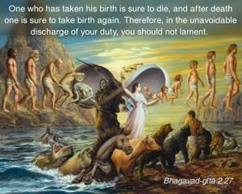
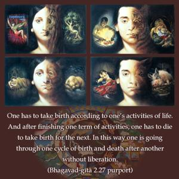
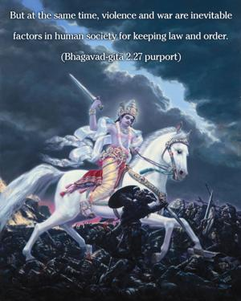
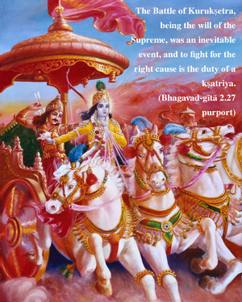
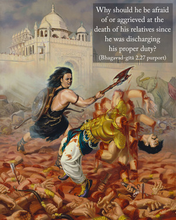

One who has taken his birth is sure to die, and after death one is sure to take birth again. Therefore, in the unavoidable discharge of your duty, you should not lament.





One has to take birth according to one’s activities of life. And after finishing one term of activities, one has to die to take birth for the next. In this way one is going through one cycle of birth and death after another without liberation. This cycle of birth and death does not, however, support unnecessary murder, slaughter and war. But at the same time, violence and war are inevitable factors in human society for keeping law and order.
The Battle of Kurukṣetra, being the will of the Supreme, was an inevitable event, and to fight for the right cause is the duty of a kṣatriya. Why should he be afraid of or aggrieved at the death of his relatives since he was discharging his proper duty? He did not deserve to break the law, thereby becoming subjected to the reactions of sinful acts, of which he was so afraid. By avoiding the discharge of his proper duty, he would not be able to stop the death of his relatives, and he would be degraded due to his selection of the wrong path of action.